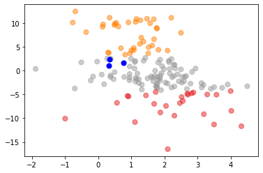
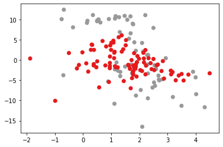
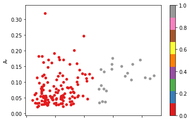
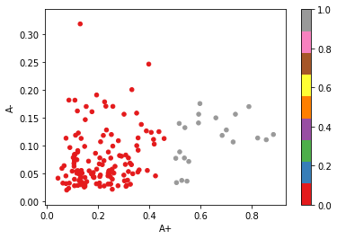
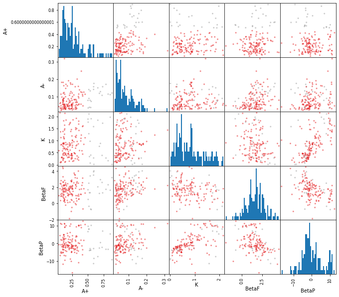
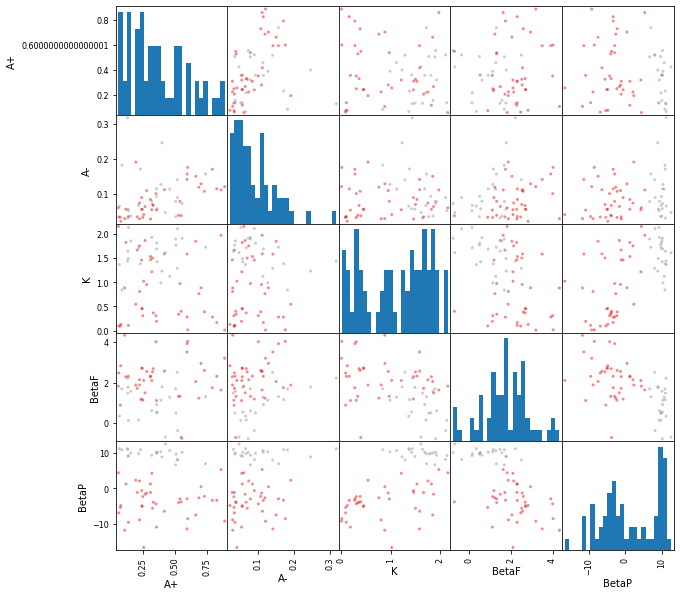
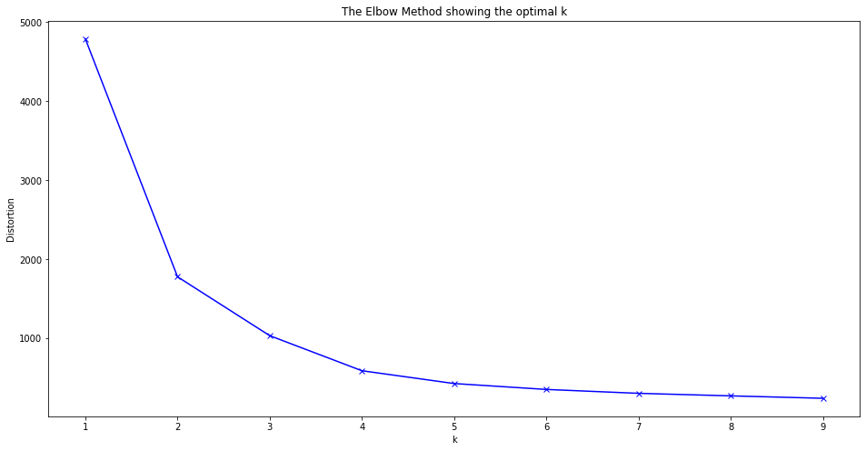

Clustering¶
df_orl = pd.read_csv("data/parameter_igt_orl.csv")
df_orl["subjID_label"] = df_orl["subjID"].astype("category").cat.codes # number label for old/young
df_orl.head()
| subjID | A+ | A- | K | BetaF | BetaP | A+-A- | subjID_label | |
|---|---|---|---|---|---|---|---|---|
| 0 | old | 0.324444 | 0.068862 | 1.502130 | 2.523191 | -5.547480 | 0.255581 | 0 |
| 1 | old | 0.885744 | 0.120145 | 0.012591 | 3.193244 | -9.159800 | 0.765598 | 0 |
| 2 | old | 0.318205 | 0.078128 | 1.927309 | 0.615708 | 9.272336 | 0.240077 | 0 |
| 3 | old | 0.728192 | 0.106737 | 0.388407 | 2.595746 | -2.239555 | 0.621455 | 0 |
| 4 | old | 0.356229 | 0.091987 | 1.810674 | 0.508605 | 9.825699 | 0.264241 | 0 |
K-Means¶
K Means Clustering for BetaF and BetaP vs Old and Young¶
df_orl_betas = df_orl[["subjID_label", "BetaF", "BetaP"]]
kmeans_betas = KMeans(n_clusters=3).fit(df_orl_betas)
centroids_betas = kmeans_betas.cluster_centers_
plt.scatter(df_orl_betas['BetaF'], df_orl_betas['BetaP'], c= kmeans_betas.labels_, cmap = "Set1", s=50, alpha=0.5)
plt.scatter(centroids_betas[:, 0], centroids_betas[:, 1], c='blue', s=50)
plt.show()

plt.scatter(df_orl_betas['BetaF'], df_orl_betas['BetaP'], c=df_orl_betas['subjID_label'], cmap="Set1_r")
plt.show()

Hierarchical Agglomerative¶
Cluster based on the A+ and A- columns only¶
Fit the clusters and show labels assigned to each data point
agg_cluster_A = AgglomerativeClustering().fit(df_orl[["A+", "A-"]])
agg_cluster_A.labels_
array([0, 1, 0, 1, 0, 0, 1, 0, 0, 0, 0, 0, 1, 0, 0, 0, 0, 0, 1, 0, 0, 0,
0, 1, 0, 1, 1, 1, 0, 0, 0, 1, 0, 1, 1, 0, 1, 0, 0, 1, 0, 0, 0, 0,
0, 0, 0, 0, 1, 1, 0, 0, 0, 0, 0, 1, 1, 1, 0, 0, 0, 1, 0, 0, 0, 0,
0, 0, 0, 0, 0, 0, 0, 0, 0, 0, 0, 0, 0, 0, 0, 0, 0, 0, 0, 0, 0, 0,
0, 0, 0, 0, 0, 0, 0, 0, 0, 0, 0, 0, 0, 0, 0, 0, 0, 0, 0, 0, 0, 0,
0, 0, 0, 0, 0, 0, 0, 0, 0, 0, 0, 0, 0, 0, 0, 0, 0, 0, 0, 0, 0, 0,
0, 0, 0, 0, 0, 0, 0, 0, 0, 0, 0, 0, 0, 0, 0, 1, 0, 0, 0, 0, 0])
df_orl.plot.scatter("A+", "A-", c=agg_cluster_A.labels_, cmap="Set1")
plt.show()

Show how the entire dataset is clustered with the two parameters
pd.plotting.scatter_matrix(df_orl[["A+", "A-", "K", "BetaF", "BetaP"]], figsize=(10,10), hist_kwds=dict(bins=50), c=agg_cluster_A.labels_, cmap="Set1")
plt.show()

Cluster with all parameters¶
agg_cluster_all = AgglomerativeClustering().fit(df_orl[["A+", "A-", "K", "BetaF", "BetaP"]])
agg_cluster_all.labels_
array([0, 0, 1, 0, 1, 1, 0, 1, 0, 1, 1, 1, 1, 0, 0, 1, 1, 1, 0, 0, 0, 0,
0, 1, 1, 1, 0, 0, 0, 1, 1, 0, 0, 1, 0, 0, 0, 0, 0, 1, 1, 0, 1, 0,
0, 0, 0, 0, 0, 0, 1, 0, 1, 0, 0, 0, 0, 1, 1, 0, 1, 1, 0, 0, 0, 0,
0, 0, 0, 0, 0, 0, 0, 0, 0, 0, 0, 1, 0, 0, 0, 0, 0, 0, 1, 0, 0, 0,
1, 1, 0, 0, 0, 0, 0, 1, 0, 0, 0, 0, 0, 0, 0, 0, 0, 0, 0, 0, 0, 0,
0, 0, 0, 1, 0, 0, 0, 0, 0, 0, 0, 0, 0, 1, 0, 0, 0, 0, 0, 1, 0, 0,
0, 0, 0, 1, 0, 1, 1, 0, 0, 0, 0, 0, 0, 0, 0, 0, 0, 0, 0, 0, 1])
Show how A+ and A- are clustered based on all params
df_orl.plot.scatter("A+", "A-", c=agg_cluster_all.labels_, cmap="Set1")
plt.show()

Show how entire dataset is clustered based on all params
pd.plotting.scatter_matrix(df_orl[["A+", "A-", "K", "BetaF", "BetaP"]], figsize=(10,10), hist_kwds=dict(bins=50), c=agg_cluster_all.labels_, cmap="Set1")
plt.show()

Clustering the old group¶
Clustering on the old group, there is a clear separation based on the BetaP parameter. The other parameters seem to be well mixed between the clusters, meaning there’s no significant difference to cluster based on.
df_orl_old = df_orl[df_orl["subjID"] == "old"]
agg_cluster_old = AgglomerativeClustering().fit(df_orl_old[["A+", "A-", "K", "BetaF", "BetaP"]])
agg_cluster_old.labels_
array([0, 0, 1, 0, 1, 0, 0, 1, 0, 1, 1, 1, 1, 0, 0, 1, 1, 1, 0, 0, 0, 0,
0, 1, 1, 1, 0, 0, 0, 1, 0, 0, 0, 1, 0, 0, 0, 0, 0, 1, 1, 0, 1, 0,
0, 0, 0, 0, 0, 0, 1, 0, 1, 0, 0, 0, 0, 0, 1, 0, 1, 1, 0])
pd.plotting.scatter_matrix(df_orl_old[["A+", "A-", "K", "BetaF", "BetaP"]], figsize=(10,10), hist_kwds=dict(bins=25), c=agg_cluster_old.labels_, cmap="Set1")
plt.show()

Using more than two clusters¶
agg_cluster3 = AgglomerativeClustering(n_clusters=3).fit(df_orl[["A+", "A-", "K", "BetaF", "BetaP"]])
agg_cluster3.labels_
array([0, 0, 1, 0, 1, 1, 0, 1, 0, 1, 1, 1, 1, 0, 2, 1, 1, 1, 0, 2, 0, 0,
0, 1, 1, 1, 0, 2, 2, 1, 1, 2, 2, 1, 2, 2, 2, 0, 0, 1, 1, 2, 1, 0,
2, 0, 2, 2, 0, 0, 1, 2, 1, 0, 0, 0, 0, 1, 1, 0, 1, 1, 0, 2, 0, 2,
2, 0, 0, 0, 2, 2, 2, 2, 2, 0, 2, 1, 2, 2, 2, 2, 2, 0, 1, 2, 0, 2,
1, 1, 2, 2, 0, 2, 2, 1, 2, 2, 2, 0, 2, 0, 0, 0, 2, 2, 0, 2, 0, 2,
0, 2, 0, 1, 0, 2, 2, 2, 2, 2, 2, 2, 2, 1, 0, 2, 0, 2, 2, 1, 2, 2,
2, 2, 2, 1, 0, 1, 1, 0, 2, 2, 2, 2, 2, 2, 2, 0, 2, 2, 2, 0, 1])
pd.plotting.scatter_matrix(df_orl[["A+", "A-", "K", "BetaF", "BetaP"]], figsize=(10,10), hist_kwds=dict(bins=50), c=agg_cluster3.labels_, cmap="viridis")
plt.show()

There seems to be much better clusters for the BetaF & BetaP parameters.
Evaluating the clusters¶
Elbow method¶
The elbow method shows that for these parameters the optimal number of clusters is 2/3
df1 = df_orl[["A+", "A-", "K", "BetaF", "BetaP"]]
distortions = []
K = range(1,10)
for k in K:
kmeanModel = KMeans(n_clusters=k)
kmeanModel.fit(df1)
distortions.append(kmeanModel.inertia_)
plt.figure(figsize=(16,8))
plt.plot(K, distortions, 'bx-')
plt.xlabel('k')
plt.ylabel('Distortion')
plt.title('The Elbow Method showing the optimal k')
plt.show()

Silhouette Analysis¶
TODO